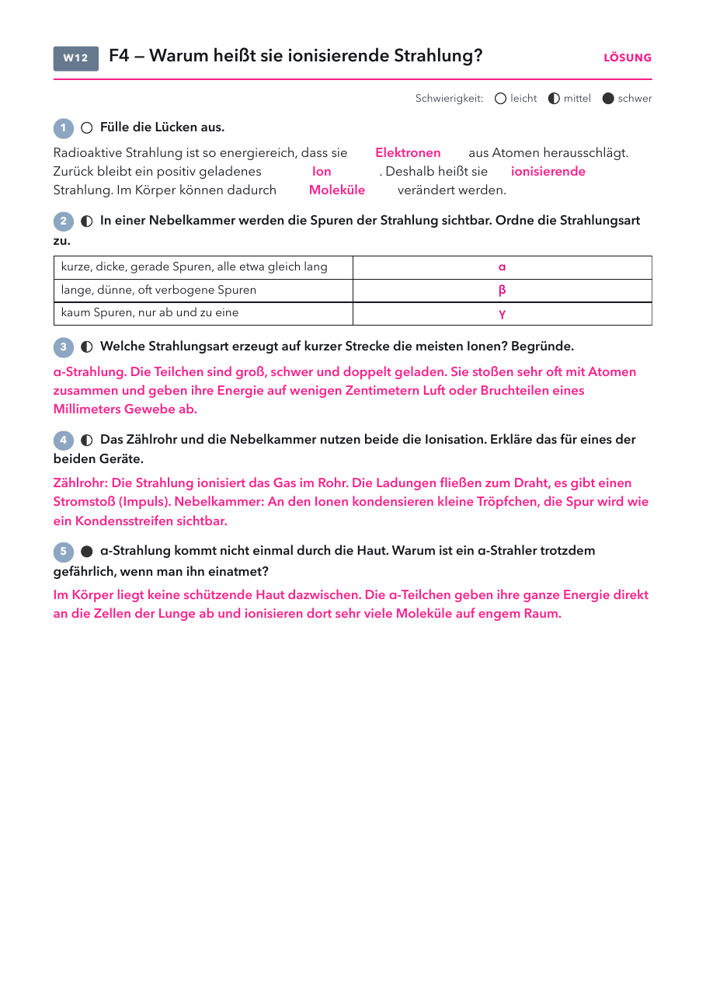

- Arbeitsblatt Ionisierende Strahlung: Seite 1, eins pro Schüler.
- Folien und Lösungen: nicht drucken.
Material
Demo (für dich)
| Material | Anzahl | Hinweis |
|---|---|---|
| Nebelkammer | 1 | falls vorhanden, mit Trockeneis |
Schülerversuch (pro Gruppe)
| Material | Anzahl | Hinweis |
|---|---|---|
| nicht nötig | ||
Ohne Nebelkammer: Szene im Wirkungslabor.
Die Stunde
1 · Einstieg Leitfrage 4
2 · Ionisation
3 · Üben
4 · Alltag
1
Einstieg Leitfrage 4
Röntgenbild und Warnzeichen, Vermutungen.
Röntgenbild und Warnzeichen, Vermutungen.
2
Ionisation
Folie und Wirkungslabor.
Folie und Wirkungslabor.
3
Üben
Arbeitsblatt.
Arbeitsblatt.
4
Alltag
Strahlung nachweisen.
Strahlung nachweisen.
Folie 1
Beobachte
Beim Arzt wird sie eingesetzt, im Labor streng abgeschirmt. Wie passt das zusammen?
Folie 2
Leitfrage 4
Was macht ionisierende Strahlung mit dem Körper?

Was vermutest du? Wir sammeln eure Vermutungen.
Folie 3
9. Warum heißt sie ionisierende Strahlung?
Die Strahlung ist so energiereich, dass sie Elektronen aus Atomen herausschlägt.
Zurück bleibt ein geladenes Ion. Genau das macht sie im Körper gefährlich.
Folie 4 · Schülerblatt mit Lösung
📄 Arbeitsblatt austeilen

Folie 5
Strahlung nachweisen
| Gerät | was man sieht | wofür |
|---|---|---|
| Dosimeter | kleine Plakette am Kittel | Wer mit Strahlung arbeitet, trägt es immer. Es zeigt die gesamte Dosis. |
| Zählrohr | klickt bei jedem Teilchen | Messgerät im Unterricht und im Strahlenschutz |
| Nebelkammer | Spuren wie Kondensstreifen | Man sieht einzelne Teilchen, sogar aus dem Weltall. |
| Fotoplatte | wird dunkel | So entdeckte Becquerel 1896 die Radioaktivität. |
Frage: Was haben alle vier Nachweise gemeinsam?
Antwort: Alle nutzen die ionisierende Wirkung: Die Strahlung verändert Atome und Moleküle, das wird gezählt, sichtbar gemacht oder geschwärzt.
Antwort: Alle nutzen die ionisierende Wirkung: Die Strahlung verändert Atome und Moleküle, das wird gezählt, sichtbar gemacht oder geschwärzt.
Einstieg Leitfrage 4
- Röntgenbild und Warnzeichen: Dieselbe Art Strahlung hilft beim Arzt und wird im Labor abgeschirmt. Die Klasse soll den Widerspruch selbst benennen.
- Röntgenstrahlung ist keine radioaktive Strahlung, sie entsteht in einer Röhre. Sie ist aber ebenfalls ionisierend.
Ionisation
- Die Strahlung gibt Energie an Elektronen ab und schlägt sie aus der Hülle. Es entsteht ein Ionenpaar.
- α ionisiert sehr dicht (viele Ionen auf kurzer Strecke), β weniger dicht, γ nur vereinzelt. Deshalb die unterschiedliche Reichweite.
- Auch Zählrohr und Nebelkammer beruhen auf Ionisation, das verbindet Leitfrage 2 und 4.
- Typische Fehlvorstellung: Bestrahlte Stoffe werden selbst radioaktiv. Bei α, β und γ ist das nicht so, nur Neutronen können Stoffe aktivieren.
Nebelkammer
- Falls in der Sammlung vorhanden: Diffusionsnebelkammer mit Trockeneis und Isopropanol. Auch ohne Präparat sieht man nach einigen Minuten Spuren (Myonen, Radon).
- Sonst Video oder die Szene im Wirkungslabor.
Wirkungslabor
Labor öffnenIonisation durch α, β und γ im Gewebe, Nebelkammer mit verschiedenen Quellen.
Arbeitsblatt Ionisierende Strahlung
PDF öffnenLösung: Lücken: Elektronen, Ion, ionisierende, Moleküle. Spuren: α, β, γ. α ionisiert am stärksten. Zählrohr: Gas wird ionisiert, Stromstoß. Eingeatmetes α wirkt direkt auf die Lunge.